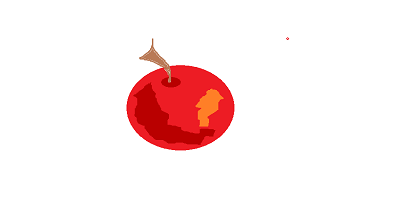

|
Царь с царицею простился, В путь-дорогу снарядился, И царица у окна Села ждать его одна. Ждет-пождет с утра до ночи, Смотрит в поле, инда очи Разболелись глядючи С белой зори до ночи; Не видать милого друга! Только видит: вьется вьюга, Снег валится на поля, Вся белешенька земля. Девять месяцев проходит, С поля глаз она не сводит. Вот в сочельник в самый, в ночь Бог дает царице дочь. Рано утром гость желанный, День и ночь так долго жданный, Издалеча наконец Воротился царь-отец. На него она взглянула, Тяжелешенько вздохнула, Восхищенья не снесла, И к обедне умерла. Долго царь был неутешен, Но как быть? и он был грешен; Год прошел как сон пустой, Царь женился на другой. Правду молвить, молодица Уж и впрямь была царица: Высока, стройна, бела, И умом и всем взяла; Но зато горда, ломлива, Своенравна и ревнива. Ей в приданое дано Было зеркальце одно; Свойство зеркальце имело: Говорить оно умело. С ним одним она была Добродушна, весела, С ним приветливо шутила И, красуясь, говорила: "Свет мой, зеркальце! скажи Да всю правду доложи: Я ль на свете всех милее, Всех румяней и белее?" И ей зеркальце в ответ: "Ты, конечно, спору нет; Ты, царица, всех милее, Всех румяней и белее". И царица хохотать, И плечами пожимать, И подмигивать глазами, И прищелкивать перстами, И вертеться подбочась, Гордо в зеркальце глядясь. Но царевна молодая, Тихомолком расцветая, Между тем росла, росла, Поднялась - и расцвела, Белолица, черноброва, Нраву кроткого такого. И жених сыскался ей, Королевич Елисей. Сват приехал, царь дал слово, А приданое готово: Семь торговых городов Да сто сорок теремов. На девичник собираясь, Вот царица, наряжаясь Перед зеркальцем своим, Перемолвилася с ним: "Я ль, скажи мне, всех милее, Всех румяней и белее?" Что же зеркальце в ответ? "Ты прекрасна, спору нет; Но царевна всех милее, Всех румяней и белее". Как царица отпрыгнет, Да как ручку замахнет, Да по зеркальцу как хлопнет, Каблучком-то как притопнет!.. "Ах ты, мерзкое стекло! Это врешь ты мне на зло. Как тягаться ей со мною? Я в ней дурь-то успокою. Вишь какая подросла! И не диво, что бела: Мать брюхатая сидела Да на снег лишь и глядела! Но скажи: как можно ей Быть во всем меня милей? Признавайся: всех я краше. Обойди все царство наше, Хоть весь мир; мне ровной нет. Так ли?" Зеркальце в ответ: "А царевна все ж милее, Все ж румяней и белее". Делать нечего. Она, Черной зависти полна, Бросив зеркальце под лавку, Позвала к себе Чернавку И наказывает ей, Сенной девушке своей, Весть царевну в глушь лесную И, связав ее, живую Под сосной оставить там На съедение волкам. Черт ли сладит с бабой гневной? Спорить нечего. С царевной Вот Чернавка в лес пошла И в такую даль свела, Что царевна догадалась, И до смерти испугалась, И взмолилась: "Жизнь моя! В чем, скажи, виновна я? Не губи меня, девица! А как буду я царица, Я пожалую тебя". Та, в душе ее любя, Не убила, не связала, Отпустила и сказала: "Не кручинься, бог с тобой". А сама пришла домой. "Что? - сказала ей царица, - Где красавица девица?" - Там, в лесу, стоит одна, - Отвечает ей она. - Крепко связаны ей локти; Попадется зверю в когти, Меньше будет ей терпеть, Легче будет умереть. И молва трезвонить стала: Дочка царская пропала! Тужит бедный царь по ней. Королевич Елисей, Помолясь усердно богу, Отправляется в дорогу За красавицей душой, За невестой молодой. Но невеста молодая, До зари в лесу блуждая, Между тем все шла да шла И на терем набрела. Ей на встречу пес, залая, Прибежал и смолк, играя; В ворота вошла она, На подворье тишина. Пес бежит за ней, ласкаясь, А царевна, подбираясь, Поднялася на крыльцо И взялася за кольцо; Дверь тихонько отворилась, И царевна очутилась В светлой горнице; кругом Лавки, крытые ковром, Под святыми стол дубовый, Печь с лежанкой изразцовой. Видит девица, что тут Люди добрые живут; Знать, не будет ей обидно! Никого меж тем не видно. Дом царевна обошла, Все порядком убрала, Засветила богу свечку, Затопила жарко печку, На полати взобралась И тихонько улеглась. Час обеда приближался, Топот по двору раздался: Входят семь богатырей, Семь румяных усачей. Старший молвил: "Что за диво! Все так чисто и красиво. Кто-то терем прибирал Да хозяев поджидал. Кто же? Выдь и покажися, С нами честно подружися. Коль ты старый человек, Дядей будешь нам навек. Коли парень ты румяный, Братец будешь нам названый. Коль старушка, будь нам мать, Так и станем величать. Коли красная девица, Будь нам милая сестрица". И царевна к ним сошла, Честь хозяям отдала, В пояс низко поклонилась; Закрасневшись, извинилась, Что-де в гости к ним зашла, Хоть звана и не была. Вмиг по речи те спознали, Что царевну принимали; Усадили в уголок, Подносили пирожок; Рюмку полну наливали, На подносе подавали. От зеленого вина Отрекалася она; Пирожок лишь разломила, Да кусочек прикусила, И с дороги отдыхать Отпросилась на кровать. Отвели они девицу Вверх во светлую светлицу И оставили одну, Отходящую ко сну. День за днем идет, мелькая, А царевна молодая Все в лесу, не скучно ей У семи богатырей. Перед утренней зарею Братья дружною толпою Выезжают погулять, Серых уток пострелять, Руку правую потешить, Сорочина в поле спешить, Иль башку с широких плеч У татарина отсечь, Или вытравить из леса Пятигорского черкеса. А хозяюшкой она В терему меж тем одна Приберет и приготовит. Им она не прекословит, Не перечут ей они. Так идут за днями дни. Братья милую девицу Полюбили. К ней в светлицу Раз, лишь только рассвело, Всех их семеро вошло. Старший молвил ей: "Девица, Знаешь: всем ты нам сестрица, Всех нас семеро, тебя Все мы любим, за себя Взять тебя мы все бы ради, Да нельзя, так бога ради Помири нас как-нибудь: Одному женою будь, Прочим ласковой сестрою. Что ж качаешь головою? Аль отказываешь нам? Аль товар не по купцам?" "Ой вы, молодцы честные, Братцы вы мои родные, - Им царевна говорит, - Коли лгу, пусть бог велит Не сойти живой мне с места. Как мне быть? ведь я невеста. Для меня вы все равны, Все удалы, все умны, Всех я вас люблю сердечно; Но другому я навечно Отдана. Мне всех милей Королевич Елисей". Братья молча постояли Да в затылке почесали. "Спрос не грех. Прости ты нас, - Старший молвил поклонясь, - Коли так, не заикнуся Уж о том". - "Я не сержуся, - Тихо молвила она, - И отказ мой не вина". Женихи ей поклонились, Потихоньку удалились, И согласно все опять Стали жить да поживать. Между тем царица злая, Про царевну вспоминая, Не могла простить ее, А на зеркальце свое Долго дулась и сердилась; Наконец об нем хватилась И пошла за ним, и, сев Перед ним, забыла гнев, Красоваться снова стала И с улыбкою сказала: "Здравствуй, зеркальце! скажи Да всю правду доложи: Я ль на свете всех милее, Всех румяней и белее?" И ей зеркальце в ответ: "Ты прекрасна, спору нет; Но живет без всякой славы, Средь зеленыя дубравы, У семи богатырей Та, что все ж тебя милей". И царица налетела На Чернавку: "Как ты смела Обмануть меня? и в чем!.." Та призналася во всем: Так и так. Царица злая, Ей рогаткой угрожая, Положила иль не жить, Иль царевну погубить. Раз царевна молодая, Милых братьев поджидая, Пряла, сидя под окном. Вдруг сердито под крыльцом Пес залаял, и девица Видит: нищая черница Ходит по двору, клюкой Отгоняя пса. "Постой, Бабушка, постой немножко, - Ей кричит она в окошко, - Пригрожу сама я псу И кой-что тебе снесу". Отвечает ей черница: "Ох ты, дитятко девица! Пес проклятый одолел, Чуть до смерти не заел. Посмотри, как он хлопочет! Выдь ко мне". - Царевна хочет Выйти к ней и хлеб взяла, Но с крылечка лишь сошла, Пес ей под ноги - и лает, И к старухе не пускает; Лишь пойдет старуха к ней, Он, лесного зверя злей, На старуху. "Что за чудо? Видно, выспался он худо, - Ей царевна говорит: - На ж, лови!" - и хлеб летит. Старушонка хлеб поймала: "Благодарствую, - сказала. - Бог тебя благослови; Вот за то тебе, лови!" И к царевне наливное, Молодое, золотое, Прямо яблочко летит... Пес как прыгнет, завизжит... Но царевна в обе руки Хвать - поймала. "Ради скуки Кушай яблочко, мой свет. Благодарствуй за обед". Старушоночка сказала, Поклонилась и пропала... И с царевной на крыльцо Пес бежит и ей в лицо Жалко смотрит, грозно воет, Словно сердце песье ноет, Словно хочет ей сказать: Брось! - Она его ласкать, Треплет нежною рукою; "Что, Соколко, что с тобою? Ляг!" - и в комнату вошла, Дверь тихонько заперла, Под окно за пряжу села Ждать хозяев, а глядела Все на яблоко. Оно  Соку спелого полно, Так свежо и так душисто, Так румяно-золотисто, Будто медом налилось! Видны семечки насквозь... Подождать она хотела До обеда; не стерпела, В руки яблочко взяла, К алым губкам поднесла, Потихоньку прокусила И кусочек проглотила... Вдруг она, моя душа, Пошатнулась не дыша, Белы руки опустила, Плод румяный уронила, Закатилися глаза, И она под образа Головой на лавку пала И тиха, недвижна стала... Братья в ту пору домой Возвращалися толпой С молодецкого разбоя. Им на встречу, грозно воя, Пес бежит и ко двору Путь им кажет. "Не к добру! - Братья молвили: - печали Не минуем". Прискакали, Входят, ахнули. Вбежав, Пес на яблоко стремглав С лаем кинулся, озлился, Проглотил его, свалился И издох. Напоено Было ядом, знать, оно . Перед мертвою царевной Братья в горести душевной Все поникли головой, И с молитвою святой С лавки подняли, одели, Хоронить ее хотели И раздумали. Она, Как под крылышком у сна, Так тиха, свежа лежала, Что лишь только не дышала. Ждали три дня, но она Не восстала ото сна. Сотворив обряд печальный, Вот они во гроб хрустальный Труп царевны молодой Положили - и толпой Понесли в пустую гору, И в полуночную пору Гроб ее к шести столбам На цепях чугунных там Осторожно привинтили И решеткой оградили; И, пред мертвою сестрой Сотворив поклон земной, Старший молвил: "Спи во гробе; Вдруг погасла, жертвой злобе, На земле твоя краса; Дух твой примут небеса. Нами ты была любима И для милого хранима - Не досталась никому, Только гробу одному". В тот же день царица злая, Доброй вести ожидая, Втайне зеркальце взяла И вопрос свой задала: "Я ль, скажи мне, всех милее, Всех румяней и белее?" И услышала в ответ: "Ты, царица, спору нет, Ты на свете всех милее, Всех румяней и белее". За невестою своей Королевич Елисей Между тем по свету скачет. Нет как нет! Он горько плачет, И кого ни спросит он, Всем вопрос его мудрен; Кто в глаза ему смеется, Кто скорее отвернется; К красну солнцу наконец Обратился молодец. "Свет наш солнышко! Ты ходишь Круглый год по небу, сводишь Зиму с теплою весной, Всех нас видишь под собой. Аль откажешь мне в ответе? Не видало ль где на свете Ты царевны молодой? Я жених ей". - "Свет ты мой, - Красно солнце отвечало, - Я царевны не видало. Знать ее в живых уж нет. Разве месяц, мой сосед, Где-нибудь ее да встретил Или след ее заметил". Темной ночки Елисей Дождался в тоске своей. Только месяц показался, Он за ним с мольбой погнался. "Месяц, месяц, мой дружок, Позолоченный рожок! Ты встаешь во тьме глубокой, Круглолицый, светлоокий, И, обычай твой любя, Звезды смотрят на тебя. Аль откажешь мне в ответе? Не видал ли где на свете Ты царевны молодой? Я жених ей". - "Братец мой, Отвечает месяц ясный, - Не видал я девы красной. На стороже я стою Только в очередь мою. Без меня царевна, видно, Пробежала". - "Как обидно!" - Королевич отвечал. Ясный месяц продолжал: "Погоди; об ней, быть может, Ветер знает. Он поможет. Ты к нему теперь ступай, Не печалься же, прощай". Елисей, не унывая, К ветру кинулся, взывая: "Ветер, ветер! Ты могуч, Ты гоняешь стаи туч, Ты волнуешь сине море, Всюду веешь на просторе, Не боишься никого, Кроме бога одного. Аль откажешь мне в ответе? Не видал ли где на свете Ты царевны молодой? Я жених ее". - "Постой, - Отвечает ветер буйный, - Там за речкой тихоструйной Есть высокая гора, В ней глубокая нора; В той норе, во тьме печальной, Гроб качается хрустальный На цепях между столбов. Не видать ничьих следов Вкруг того пустого места; В том гробу твоя невеста". Ветер дале побежал. Королевич зарыдал И пошел к пустому месту, На прекрасную невесту Посмотреть еще хоть раз. Вот идет; и поднялась Перед ним гора крутая; Вкруг нее страна пустая; Под горою темный вход. Он туда скорей идет. Перед ним, во мгле печальной, Гроб качается хрустальный, И в хрустальном гробе том Спит царевна вечным сном. И о гроб невесты милой Он ударился всей силой. Гроб разбился. Дева вдруг Ожила. Глядит вокруг Изумленными глазами, И, качаясь над цепями, Привздохнув, произнесла: "Как же долго я спала!" И встает она из гроба... Ах!.. и зарыдали оба. В руки он ее берет И на свет из тьмы несет, И, беседуя приятно, В путь пускаются обратно, И трубит уже молва: Дочка царская жива! Дома в ту пору без дела Злая мачеха сидела Перед зеркальцем своим И беседовала с ним. Говоря: "Я ль всех милее, Всех румяней и белее?" И услышала в ответ: "Ты прекрасна, слова нет, Но царевна все ж милее, Все румяней и белее". Злая мачеха, вскочив, Об пол зеркальце разбив, В двери прямо побежала И царевну повстречала. Тут ее тоска взяла, И царица умерла. Лишь ее похоронили, Свадьбу тотчас учинили, И с невестою своей Обвенчался Елисей; И никто с начала мира Не видал такого пира; Я там был, мед, пиво пил, Да усы лишь обмочил. 1833 г.
|